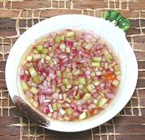

|
Vinegar Cucumber DipPhilippine - Sukang Sawsawan Pipino | ||||
| Makes: Effort: Sched: DoAhead: |
2 cup ** 15 min Yes |
This is a popular and rather refreshing dip / condiment, often used with crisp fried, grilled and roasted items. It should be made a couple hours ahead as it will benefit from flavors blending. | |||
|
|
1 5 5 2 1 1 1 |
c oz oz t t T |
Vinegar (1) Cucumber (2) Onion, Red Thai Chili (3) Salt Pepper, black Sugar |
Make - (15 min + rest time if possible)
|